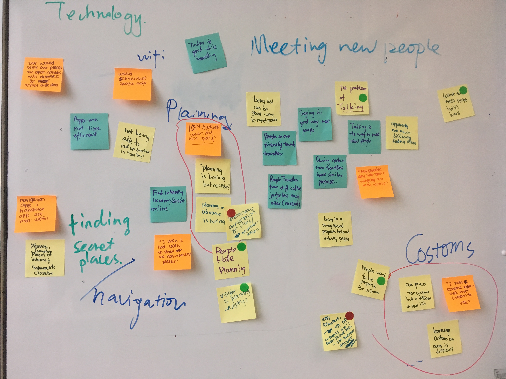
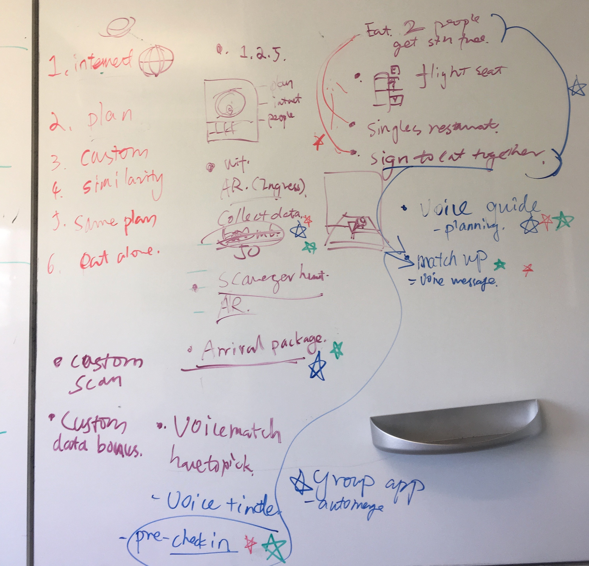
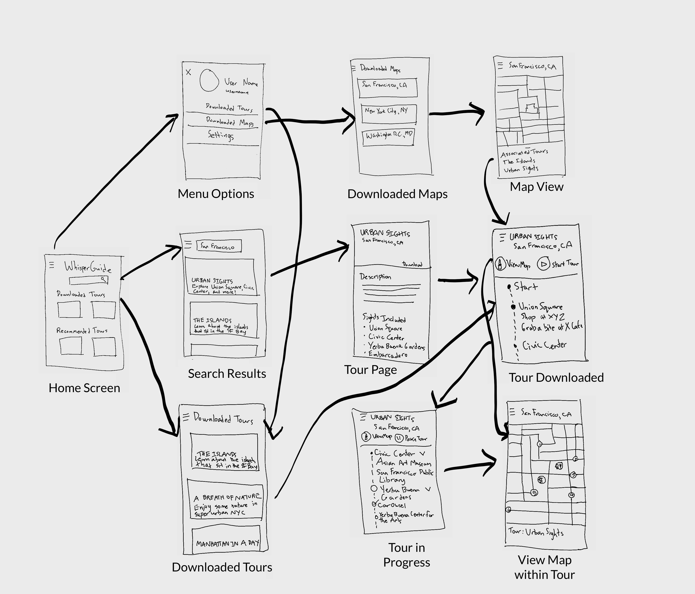
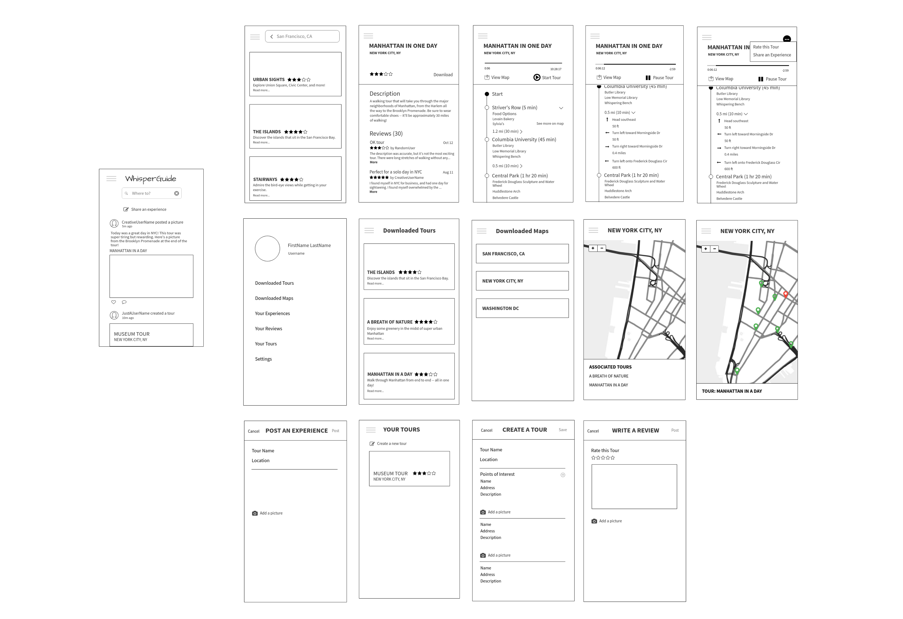

WhisperGuide is an app designed to help travellers navigate offline by providing downloadable maps and tours, as well as social features for when travellers get back online. I worked with two other designers during the user research and brainstorming stages, and then delved deeper into one of my design concepts. The entire process took about 1.5 months.
Whenever I travel, I try to make do without international data, and therefore cannot rely on my smartphone to navigate. Unfortunately, I am also directionally challenged, so I have often gotten lost. Other people may or may not have the same problem. For example, my teammates described safety issues, boredom, hatred of packing, and social stigma against those who travel alone. So we decided to generalize and focus on the question: How can young people have a better experience when travelling alone?
We defined "young people" as individuals 20-30 years old, who are more likely to be financially able and responsible enough to travel alone. We created a script to guide our interviews.
Some questions we asked potential users were:
Based on our user interviews, a typical young person traveling alone:
After our user research, we jumped straight in to brainstorming. We wrote down key points from each of our interviews on individual Post-It Notes and grouped the Post-Its into categories. The colors indicate different teammates -- my color was yellow.
We ended up with six categories, which include:
Using these categories as a guide, we brainstormed some ideas. We each voted for our top 3 choices.
Our top ideas, which we then separately created design assets for, are as follows:
Data + Augmented Reality: Explore and collect data, Pokemon Go style
An app which allows the traveller to collect data by going to certain monuments/places of interest. The traveller earns data bonuses for going to certain groups of monuments.
User needs addressed: Accessibility of data, spontaneous plan generation
Voice Guide: A tour guide in your pocket (the idea I worked on, as illustrated above)
An app which would allow voice directions to be downloaded onto the traveller's phone beforehand. It features routes that involve the whole experience (i.e. which restaurants are good, points of interest).
User needs addressed: Accessibility of data, spontaneous plan generation, sharing customs
Arrival Package: A travel care package
A service that provides a package that comes with essentials, key to booked hotel, travel tickets, etc. Also comes with a local guide who will explain customs.
User needs addressed: Spontaneous plan generation, sharing customs
Match-up Pre- or live match-up
An app which would notify the traveller when they are close to people who match what they want. This would be based on a "pre check-in" where the traveller posts what they want to do (i.e. eat with another person) at a location before getting there.
User needs addressed: Finding similar travelers, finding others to dine with
Here are my initial sketches for the audio travel guide.
After working on my concept sketch, I got some feedback on the design. I found out that there are actually similar apps in existence: Detour, TripScout, and PocketGuide seem to be the main ones. After downloading and trying out the apps, I noted the lack of social component beyond the ability to share on Facebook or rate tours, especially because everyone in our user group mentioned that they didn't like being alone and would like to meet new people when traveling. As a result, for the next stage, I decided to add these features: rating tours, user-created tours, and sharing photos and experiences of tours.
Using printouts of the wireframes, I tested the user interface. I used these sample tasks:
Users appeared to struggle with finding how to post an experience. Most expressed irritation at having to use the hamburger menu so much to access the different options. When it came to creating their own tours, some expressed concerns about the safety and regulation of such tours.
Based on these results, I made the following changes:
Here is the final prototype.
Doing research on competitors/existing products already in the market would have been helpful. In our user interviews, we asked about what tools and apps they use for travel. I kind of assumed that because none of our participants for our initial user research mentioned using similar apps, this product didn’t exist, but that was not true.
I would want to test as a next step. If I were going to test, I would like to especially focus on the interactions between offline/online functions, as well as the interface for audio. I based the audio interface off of voice assistants such as Siri, but since there isn’t much back and forth communication between the user and the app, I am unsure if users actually prefer something similar to voice assistants.